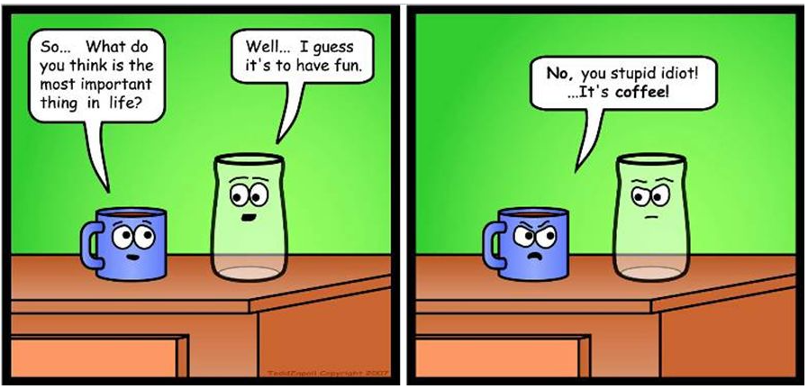

Grin Design Choice Criticisms - Truth or Fiction
Introduction
Grin is a cryptocurrency implemented in Rust that makes use of Mimblewimble transactions and the Cuckatoo algorithm to perform Proof-of-Work (PoW) calculations. The main design goals of the Grin project are: privacy, transaction scaling and design simplicity to promote long term maintenance of the Grin source code [1].
During the development of the Grin project, the developers have received criticisms from the community on a number of the design and implementation decisions that they have made. This report will have a look at some of these criticisms and determine if there are some truth to these concerns or if the concerns are unwarranted or invalid. Some suggestions will be made on how these problems could be improved or addressed.

This report will also investigate their selected emission scheme, PoW algorithm, selection of key-store library and their choice of cryptographic curve used for signatures. Each of these topics will be discussed in detail, starting with their selected emission scheme.
Contents
Monetary Policy Due to Static Emission Scheme
Bitcoin has a limited and finite supply of coins. It makes use of 10-minute block times, where the initial reward for solving the first block was 50 BTC. This reward is reduced every 4 years, by halving it, until a maximum of 21 million coins are in circulation [2]. During this process, the transaction fees and newly minted coins are paid to miners and is used as an incentive for miners to maintain the blockchain. Once all 21 million Bitcoins are released, only transaction fees will be paid to miners. Many fear that paying miners only transaction fees in the future will not be sufficient to maintain a large network of miners and it will result in the centralisation of the network, as only large mining farms will be able to perform the mining task in a profitable manner. Others believe that in time mining fees will increase and hardware costs for miners will decrease making the act of mining and maintaining the bitcoin blockchain remain lucrative and profitable [3].
Grin has decided on a different approach, where their number of coins will not be capped at a fixed supply. It will make use of a static emission rate, where a constant 60 Grin is released as a reward for solving every block. Their algorithm makes use of a block goal of 60 seconds. This will result in roughly 1 coin being created every second for as long as the blockchain is being maintained [4].
Their primary motivations for selecting a static emission rate are:
- there will be no upper limit on the amount of coins that can be created,
- the percentage of newly created coins compared to the total coins in circulation will tend toward zero,
- it will mitigate the effect of orphaned and lost coins,
- it will encourage spending rather than holding of coins.
The selected emission rate will result in Grin becoming a high inflationary currency with more than 10% inflation for the first 10 years, that is higher than most competing cryptocurrencies or successful fiat systems. This is in comparison to other cryptocurrencies such as Monero, that will have less than 1% inflation after the first 8 years in circulation and have a decreasing 0.87% inflation with the start of their tail emissions [5]. Monero will have a better potential of being used as a Store of Value (SoV) in the long run.
The fixed emission rate of Grin on the other hand will limit its use as a SoV, as it will experience constant price pressure, which might make it difficult for Grin to maintain a high value initially, while the inflation rate remains high. This high inflation rate might encourage Grin to rather be used as a Medium of Exchange (MoE) [6], as it will take approximately 50 years for the inflation to drop below 2%. The Grin team believes that the inflation rate is not that high as many coins are lost and become unusable on a blockchain. These lost coins, which they believe can be as much as 2% per year of the total supply, should be excluded from the inflation rate calculation [7]. The total percent of lost transactional coins are difficult to estimate [8] and it seems as if this value is higher for low value coins compared to high value coins where users tend to be more careful. The Grin team believes that by selecting a high inflation rate it will improve the distribution of coins as holding of coins will be discouraged. They also hope that a high inflation rate will produce natural pricing and limit price manipulation by large coin holders [7].
Most economists for traditional fiat systems agree that deflation is bad as it increases debt and some inflation is good as it stimulates the economy of a country [9]. With inflation the purchasing power of savings decrease over time, which encourages the purchasing of goods and services, resulting in the currency being used as a MoE rather than a SoV. People with debt such as study, vehicle and home loans also benefit from inflation as it produces an eroding effect on the total debt for long periods of repayment. Currently, this benefit does not apply to cryptocurrencies as not much debt exists as it is difficult to maintain successful borrower-lender relationships due to the anonymous nature of cryptocurrencies [10].
On the other hand, deflation in traditional fiat systems, produce over time an increase of purchasing power that encourages saving and discourages debt, resulting in the currency being used as a SoV. Unfortunately, this comes with a negative side effect that people will stop purchasing goods and services. Bitcoin can be considered deflationary as people would rather buy and hold Bitcoins as the price per coin might increase over time, this is limiting its use as a MoE. Also, high deflation can cause a deflationary spiral, as people with debt will have more debt and people with money will start hoarding their money as it might be worth more at a later stage [11]. Deflation in traditional fiat systems typically tend to only happen in times of economic crisis and recession and is managed by introducing inflation using monetary policies [12].
As most inflationary fiat systems are government backed, they are able to control the amount of inflation to help alleviate government debt and finance budget deficits [13]. This could result in hyperinflation where the devaluation of currency occur at an extreme pace resulting in many people losing their savings and pensions [14]. Cryptocurrencies on the other hand provide a transparent algorithmic monetary inflation that is not controlled by a central authority or government, limiting its misuse.
Finding a good balance between being a SoV and MoV is an important issue for developing a successful currency. A balance between deflation and inflation need to be selected to motivate saving and at the same time spending of a currency. A low inflationary model where inflation is algorithmically maintained and not controlled by a single authority seem like the safest choice, but only time will tell if the high inflation model proposed by Grin will have the desired effect.
From ASIC Resistant to ASIC Friendly
Initially, the Grin team proposed using two Application-Specific Integrated Circuit (ASIC) resistant algorithms: Cuckoo cycles and a high memory requirement Equihash algorithm called Equigrin. These algorithms were selected to encourage mining decentralisation. ASIC resistance was obtained by having high memory requirements for the PoW algorithms, limiting its calculation to Central Processing Units (CPUs) and High-range Graphics Processing Units (GPUs) [15]. The plan was to adjust the parameters of these PoW algorithms every 6 months to deter stealth ASIC mining and move over to using only Cuckoo cycles as the primary PoW algorithm.
Recently, the Grin team proposed to switch to a new dual PoW system, where one PoW algorithm is ASIC friendly and the other PoW algorithm is not. Grin will now make use of the new Cuckatoo Cycle algorithm, but details of their second PoW algorithm remain vague. The Cuckatoo PoW algorithm is a variation of Cuckoo that aims to be more ASIC friendly [16]. This is achieved by using plain bits for ternary counters and requiring large amounts of Static Random-Access Memory (SRAM) to speed up the memory latency bound access of random node bits. SRAM tends to be limited on GPU and CPU processors, but increasing SRAM on ASIC processors is much easier to implement [17].

ASIC miners tend to be specialised hardware that are very efficient at calculating and solving specific PoW algorithms. Encouraging ASIC miners on a network might not seem like a bad idea as the mining network will have a higher hash rate. This will make it more difficult to hack and it will use less electrical power compared to using primarily CPU and GPU based miners.
Unfortunately, a negative side effect of running a PoW algorithm that is ASIC friendly is that the network of miners will become more centralised. General consumers do not have access or a need for this type of hardware; this limits the use of ASIC miners to be primarily reserved for enthusiasts and large corporations establishing mining farms. Having the majority of the networks hash rate localised in large mining farms will result in the blockchain becoming more vulnerable to potential 51% attacks [18], especially when specific ASIC manufacturers recommend or enforce their hardware to make use of specific mining pools that are controlled by single bodies.
Using general purpose and multi-use hardware such as CPUs and GPUs that are primarily used for gaming and large workstations, ensures that the network of miners is more widely distributed and that it is not controlled by a single potential bad player. This will make it more difficult for a single entity to control more than 50% of the networks hash rate or total computational power, limiting the potential of double spends.
Selecting to be ASIC resistant or ASIC friendly is an important decision that can affect the security of the blockchain. The Grin team's choice to support the ASIC community and trying to balancing an ASIC friendly and an ASIC resistant PoW algorithm will be interesting with many potential pitfalls.
Choice of Cryptographic Elliptic-curve - secp256k1
Elliptic curve cryptography is used for generating Private and Public key pairs that can be used for digital signatures as well as authorisation for individuals and transactions. It is much more secure and requires smaller keys for similar security compared to other Public-key cryptography techniques such as RSA [19]

Secp256k1 is an elliptic curve defined in the Standards for Efficient Cryptography [20] and is used for digital signatures in a number of cryptocurrencies such as Bitcoin, Ethereum, EOS, Litecoin, etc. [21]. Grin also makes use of this same elliptic curve [22]. Some security experts recommend not using the secp256k1 curve as some issues have been uncovered, but not necessarily exploited. One of these problems are that the complex-multiplication field discriminant is not high enough to be secure. This could result in potential future exploits as curves with low complex-multiplication field discriminant tend to be easier to break [23].
Starting a project with a potentially compromised curve does not seem like a good idea, especially when other curves with better security properties and characteristics do exist. A number of alternative curves exist that could be used to improve security such as Curve25519 that can be used with the improved Ed25519 public-key signature system. The Ed25519 signature scheme makes use of the Edwards-curve Digital Signature Algorithm (EdDSA) and uses SHA-512 and Curve25519 [24] to build a fast signature scheme without sacrificing security.
Many additional alternatives exist and platforms such as SafeCurves, maintained by Daniel J. Bernstein and Tanje Lange can help the investigation and selection of an alternate security curve. The SafeCurves platform will make it easier to evaluate the security properties and potential vulnerabilities of many cryptographic curves [25].
Selection of Key-store Library
Grin originally made use of RocksDB [26] as an internal key-value store, but received some criticism for this decision. A number of alternatives with other performance and security characteristics exist such as LevelDB [27], HyperLevelDB [28] and the Lightning Memory-Mapped Database (LMDB) [29]. Selecting between these to find the "best" key-value store library for blockchain applications remains a difficult problem as many online sources with conflicting information exist.
Based on the controversial results from a number of online benchmarks it seems as if some of these alternatives have better performance such as producing small database sizes and performing faster queries [30]. As an example, RocksDB or LevelDB seem incorrectly to be better alternatives to LMDB as they produced the fastest reads and deletes and produce some of the smallest databases compared to the other database libraries [31]. This is not entirely true as some mistakes were made during the testing process. Howard Chu wrote an article entitled "Lies, Damn Lies, Statistics, and Benchmarks" that exposes some of these issues and show that LMDB is the best key-value store library [32]. Other benchmarks performed by Symas Corp support this claim, where LMDB outperformed all the tested key store libraries [33].
Grin later replaced RocksDB with LMDB to maintain the state of Grin Wallets [34], [35]. This switch looks to be a good idea as LMDB seem to be the best key-value store library for blockchain related applications.
Conclusions, Observations, Recommendations
- Selecting the correct emission rate to create a sustainable monetary policy is an important decision and care should be taken to ensure that the right balance is found between being a SoV and/or a MoE.
- Weighing the benefits and potential issues of being ASIC friendly compared to ASIC resistant need to be carefully evaluated.
- Tools such as SafeCurves can be used to select a secure elliptic curve for an application. Cryptographic curves with even potential security vulnerabilities should rather be ignored.
- Care should be taken when using online benchmarks to help select libraries for a project as the results might be misleading.
References
[1] Grin: a lightweight implementation of the MimbleWimble protocol, Mattia Franzoni, https://medium.com/novamining/grin-testnet-is-live-98b0f8cd135d, Date accessed: 2018-10-05.
[2] Bitcoin: A Peer-to-Peer Electronic Cash System, Satoshi Nakamoto, https://bitcoin.org/bitcoin.pdf, Date accessed: 2018-10-05.
[3] What Happens to Bitcoin After All 21 Million are Mined?, Nathan Reiff, https://www.investopedia.com/tech/what-happens-bitcoin-after-21-million-mined/, Date accessed: 2018-10-07.
[4] Emission rate of Grin, https://www.grin-forum.org/t/emmission-rate-of-grin/171, Date accessed: 2018-10-15.
[5] Coin Emission and Block Reward Schedules: Bitcoin vs. Monero, https://www.reddit.com/r/Monero/comments/512kwh/useful_for_learning_about_monero_coin_emission/d78tpgi, Date accessed: 2018-10-15.
[6] On Grin, MimbleWimble, and Monetary Policy, https://www.reddit.com/r/grincoin/comments/91g1nx/on_grin_mimblewimble_and_monetary_policy/, Date accessed: 2018-10-07.
[7] Grin - Monetary Policy, https://github.com/mimblewimble/docs/wiki/Monetary-Policy, Date accessed: 2018-10-08.
[8] Exclusive: Nearly 4 Million Bitcoin Lost Forever, New Study Says, Jeff J. Roberts and Nicolas Rapp, http://fortune.com/2017/11/25/lost-bitcoins/, Date accessed: 2018-10-08.
[9] How Inflationary should Cryptocurrency really be?, Andrew Ancheta, https://cryptobriefing.com/how-inflationary-should-cryptocurrency-be/, Date accessed: 2018-11-06.
[10] Debtcoin: Credit, debt, and cryptocurrencies, Landon Mutch, https://cryptoinsider.21mil.com/debtcoin-credit-debt-and-cryptocurrencies/, Date accessed: 2018-11-06.
[11] Inflation vs Deflation: A Guide to Bitcoin & Cryptocurrencies Deflationary Nature, Brian Curran, https://blockonomi.com/bitcoin-deflation/, Date accessed: 2018-11-06.
[12] Why Is Deflation Bad for the Economy?, Adam Hayes, https://www.investopedia.com/articles/personal-finance/030915/why-deflation-bad-economy.asp, Date accessed: 2018-11-06.
[13] Inflation and Debt, John H. Cochrane, https://www.nationalaffairs.com/publications/detail/inflation-and-debt, Date accessed: 2018-11-07.
[14] Think Piece: Fighting Hyperinflation with Cryptocurrencies, Lucia Ziyuan, https://medium.com/@Digix/think-piece-fighting-hyperinflation-with-cryptocurrencies-a08fe86bb66a, Date accessed: 2018-11-07.
[15] Grin - Proof of Work update, https://www.grin-forum.org/t/proof-of-work-update/713, Date accessed: 2018-10-15.
[16] Grin - Meeting Notes: Governance, Sep 25 2018, https://www.grin-forum.org/t/meeting-notes-governance-sep-25-2018/874, Date accessed: 2018-10-15.
[17] Cuck(at)oo Cycle, https://github.com/tromp/cuckoo, Date accessed: 2018-10-15.
[18] 51% Attack, https://www.investopedia.com/terms/1/51-attack.asp, Date accessed: 2018-10-11.
[19] What is the math behind elliptic curve cryptography?, Hans Knutson, https://hackernoon.com/what-is-the-math-behind-elliptic-curve-cryptography-f61b25253da3, Date accessed: 2018-10-14.
[20] Standards for Efficient Cryptography Group, http://www.secg.org/, Date accessed: 2018-10-11.
[21] Secp256k1, https://en.bitcoin.it/wiki/Secp256k1, Date accessed: 2018-10-15.
[22] Grin - Schnorr signatures in Grin & information, https://www.grin-forum.org/t/schnorr-signatures-in-grin-information/730, Date accessed: 2018-10-08.
[23] SafeCurves - CM field discriminants, http://safecurves.cr.yp.to/disc.html, Date accessed: 2018-10-15.
[24] Curve25519: New Diffie-Hellman Speed Records, Daniel J. Bernstein, https://cr.yp.to/ecdh/curve25519-20060209.pdf, Date accessed: 2018-10-15.
[25] SafeCurves - choosing safe curves for elliptic-curve cryptography, http://safecurves.cr.yp.to/, Date accessed: 2018-10-10.
[26] RocksDB, https://rocksdb.org/, Date accessed: 2018-10-10.
[27] LevelDB, http://leveldb.org/, Date accessed: 2018-10-15.
[28] HyperLevelDB, http://hyperdex.org/, Date accessed: 2018-10-15.
[29] LMDB, https://github.com/LMDB, Date accessed: 2018-10-29.
[30] Benchmarking LevelDB vs. RocksDB vs. HyperLevelDB vs. LMDB Performance for InfluxDB, Paul Dix, https://www.influxdata.com/blog/benchmarking-leveldb-vs-rocksdb-vs-hyperleveldb-vs-lmdb-performance-for-influxdb/, Date accessed: 2018-10-15.
[31] Lmdbjava - benchmarks, Ben Alex, https://github.com/lmdbjava/benchmarks/blob/master/results/20160630/README.md, Date accessed: 2018-10-14.
[32] Lies, Damn Lies, Statistics, and Benchmarks, Howard Chu, https://www.linkedin.com/pulse/lies-damn-statistics-benchmarks-howard-chu, Date accessed: 2018-10-29.
[33] HyperDex Benchmark, Symas Corp, http://www.lmdb.tech/bench/hyperdex/, Date accessed: 2018-10-29.
[34] Grin - Basic Wallet, https://github.com/mimblewimble/grin/blob/master/doc/wallet/usage.md, Date accessed: 2018-10-15.
[35] Progress update May - Sep 2018, Yeastplume, https://www.grin-forum.org/t/yeastplume-progress-update-thread-may-sept-2018/361/12, Date accessed: 2018-10-28.
Contributors
- https://github.com/neonknight64
- https://github.com/hansieodendaal
- https://github.com/SWvheerden
- https://github.com/philipr-za